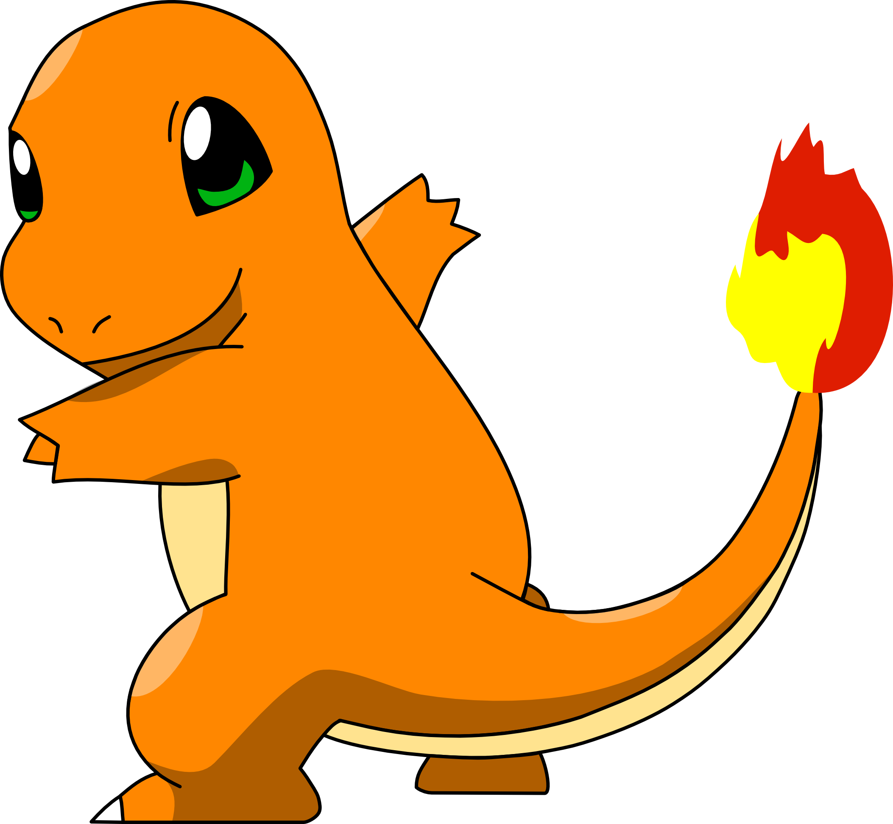

Pikachu
Pikachu é uma espécie fictícia pertencente à franquia de mídia Pokémon da Nintendo. Ele apareceu pela primeira vez no Japão em 1996, nos jogos eletrônicos Pokémon Red and Blue, e foi criado por Satoshi Tajiri.

2022 @ Vegsivir
Squirtle
Squirtle, conhecido como Zenigame no Japão, é uma espécie de Pokémon da franquia Pokémon da Nintendo e Game Freak. Foi desenhado por Atsuko Nishida. Seu nome foi alterado de Zenigame para Squirtle durante a localização em inglês da série para dar a ela um "nome inteligente e descritivo".

2022 @ Vegsivir
Bulbasaur
Bulbasaur, chamado de Bulbasauro em português, é uma espécie fictícia pertencente à franquia Pokémon da Nintendo. Apareceu pela primeira vez em 1996 nos jogos Pocket Monsters Red & Green, levados ao ocidente como Pokémon Red & Blue.

2022 @ Vegsivir
Charmander
Charmander, conhecido como Hitokage no Japão, é um espécie de pokémon da franquia Pokémon da Nintendo e da Game Freak. Criado por Atsuko Nishida, Charmander apareceu pela primeira vez no videogame Pokémon Red e Blue e subsequentes, mais tarde aparecendo em vários jogos da franquia.
